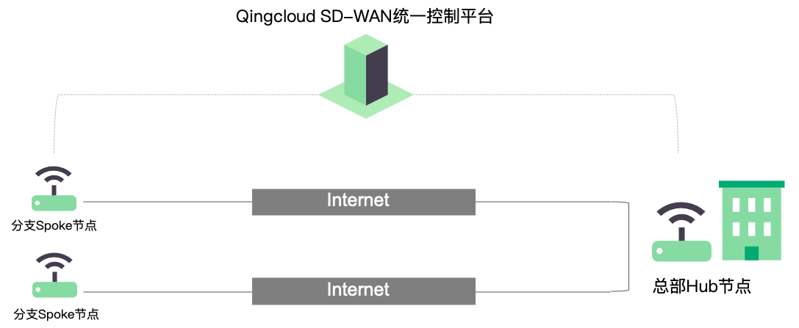
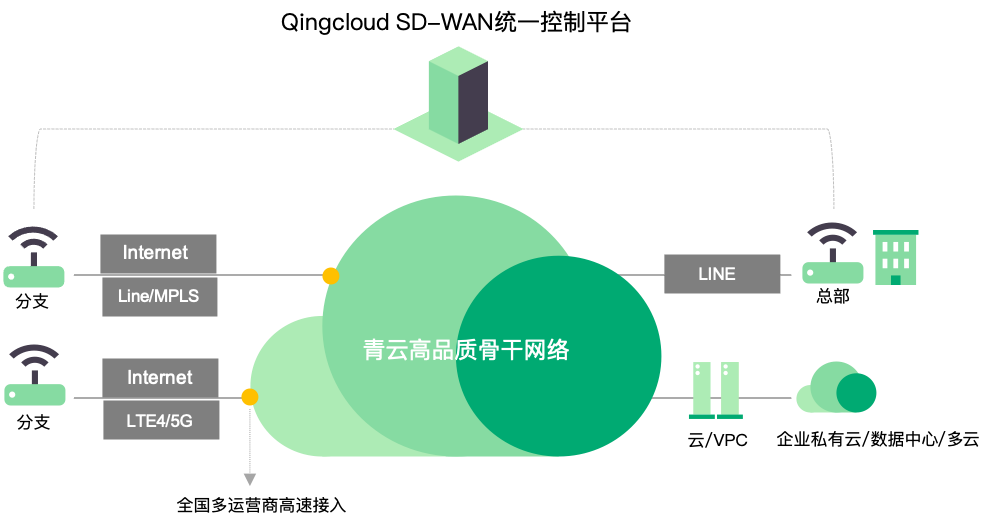

光盒服务
基础服务
服务描述：利用用户原有互联网链路或专线专有链路，简单便捷的组建客户专属广域网络。
使用场景：仅限于企业自组网服务。
接入组件：光盒。
组网结构：为星型结构(即 Hub-Spoke 结构)，总部为 Hub 节点，各分支为 Spoke 节点，所有分支互通需经过总部 Hub 节点转发，同时也便于总部对各个分支的流量管理。
使用建议：预先建立 WAN 网络，定义 Hub 节点，然后加入 Spoke 节点。
使用注意：由于互联网质量不可预估各分支节点使用运营商链路不同且有跨运营商穿透有时会发生丢包，延时增大等原因同时也会导致节点间链路中断或丢包，如需高质量保证请切换至高级服务。

高级服务
服务描述：利用亿栖云高品质骨干网络及智能调度技术保证端到端通信品质，结合全国多运营商接入高速交换中心保证用户最后一公里不同运营商接入及高速交换，以支持用户组建高品质、多服务的专属混合广域网络。
使用场景：高速入云服务，混合云组网服务，自组网服务及更多的增值服务。
接入组件：光盒； VPC 网关；专线。
组网结构：默认支持 Fullmesh 即全互联组网，用户可自定义过滤规则即组网模式。
使用建议：预先建立 WAN 网络，定义接入点加入网络即可。
